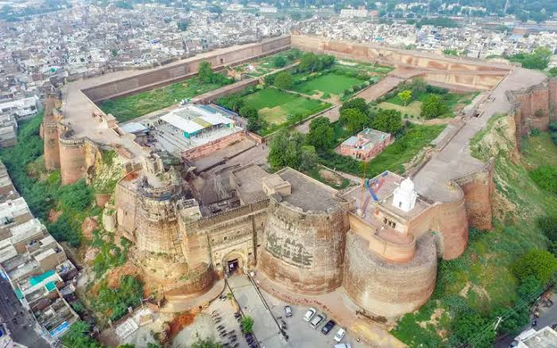

Takht Sri Damdama Sahib

Quila Mubarak

Bathinda Lake

Rose Garden
Bathinda is one of the oldest cities in Punjab, with a rich history that dates back many centuries. It was historically known by names such as Tabarhindh, Bikramgarh, and Batrind. The city is famous for Qila Mubarak, an ancient fort that played an important role in medieval Indian history. The fort was captured by Mahmud of Ghazni in 1004 CE and later became a strategic center during the conflicts between Prithviraj Chauhan and Muhammad Ghori in the 12th century.
Bathinda is also associated with the Bhatti Rajputs, who established and developed the town. During the 18th century, it came under the rule of Maharaja Ala Singh of Patiala. Today, Bathinda is known for its rich heritage, historic fort, lakes, industries, and religious sites such as Takht Sri Damdama Sahib.
Takht Sri Damdama Sahib
Quila Mubarak
Bathinda Lake
Rose Garden
From towering ancient fortress brick walls to scenic lake views and holy shrines, discover Bathinda from multiple angles.

City Skyline PanoramaElevated panorama showcasing the city's modern road network and lakes.
 Ancient Bastion Angle
Ancient Bastion Angle
Dramatic upward perspective of the formidable 1,900-year-old brick walls.
Sanctuary Courtyard Angle
Broad courtyard perspective of the sacred Guru Ki Kashi seat of authority.
Waterfront Reflection Angle
Serene angle capturing reflections across the artificial lake promenade.
Read experiences from travelers who visited Bathinda or share your personal feedback.
Have tips or highlights about Bathinda? Share them below!


© 2026 Punjab Tourism. All rights reserved.